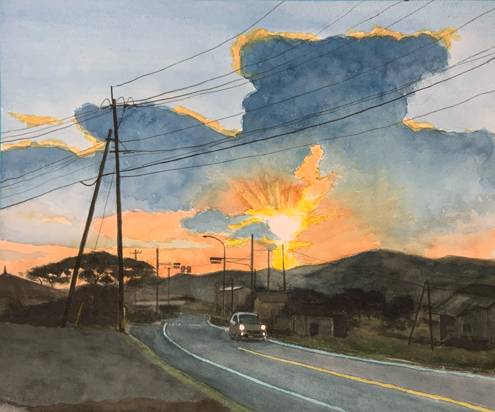

ようこそ
天草の山や海、港町の風景を、水彩画とペンスケッチで描いています。じっくり取り組む水彩画と、暮らしの一場面を気軽に残すスケッチ。二つの楽しみを、このギャラリーで紹介します。
新着情報
- 読み込み中です…

新着作品
絵を描く楽しみ
プロフィール
川端浩二。1957年12月、熊本県天草市深海町生まれ。市役所を退職後、地元の絵画教室に通いながら水彩画を制作しています。天草の山や海、港町の空気感を大切に描いています。
略歴
1982年 市役所入職／2018年 定年退職・水彩画制作を開始
展示
大田アート教室作品展（2023年6月、2024年10月、2025年7月）